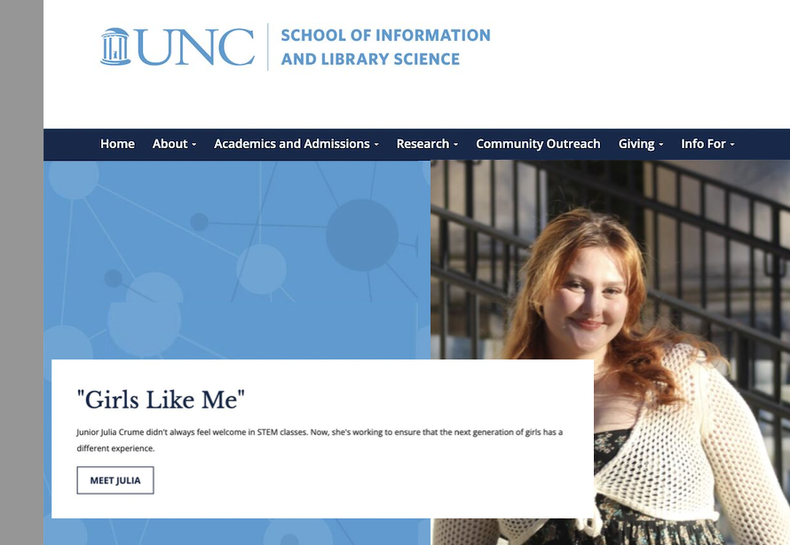
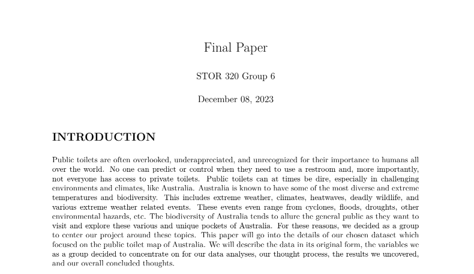
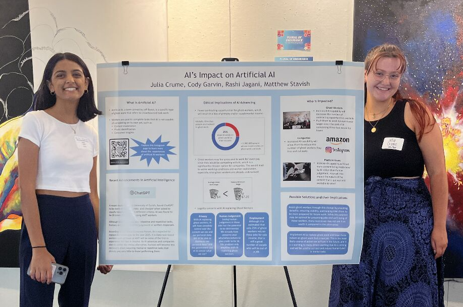
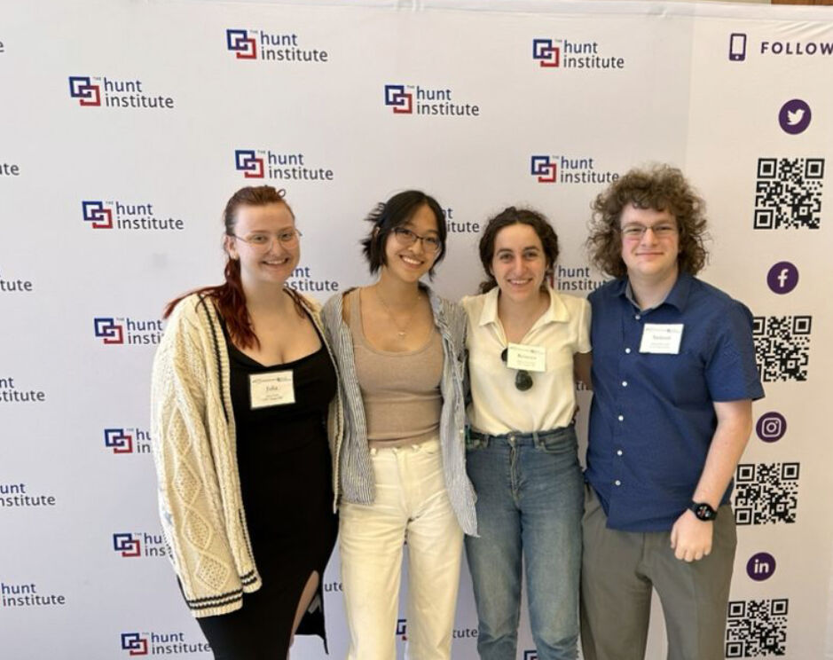
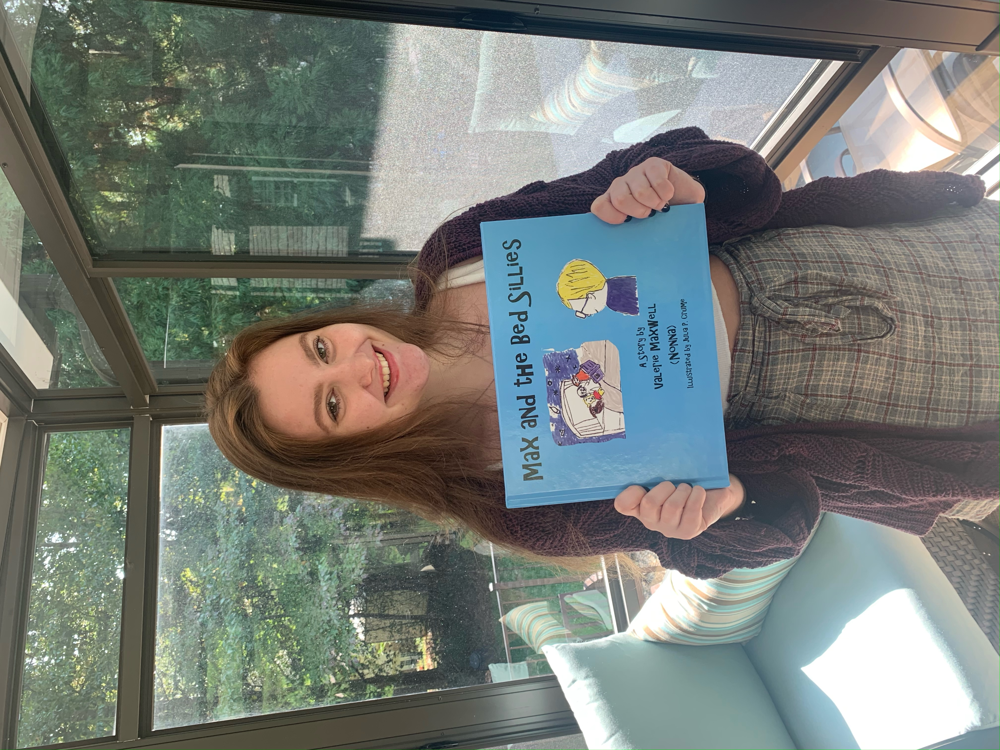

Awarded for my hardwork and accomplishments in COMM638 - Video Game Design.
My game was titled "Compassion Conundrum" where it was about balancing helping others while still taking care of yourself.
View awards list.
Student Showcase Interview

Spring 2024
I had the honor of being interviewed for UNC's School of Information and Library Science website
for their student showcase! A big part of the interview was sharing my work and passion for bridging the STEM gender gap.
View article.
Game Design Project
Spring 2024
Developed a Unity-based game that explored the balance between mental health and happiness.
Players navigated interactions that affected a "brain bar" (mental health) and a "heart bar" (happiness), highlighting
the stress of maintaining balance. The game used random images and invisible obstacles to symbolize life's unpredictability
and the need for mental wellness.
Data Science Class Project

Fall 2023
For this group project, we had to identify intriguing data and pose significant questions.
This was followed by the exploratory analysis where we used visual and tabular methods to look into our questions.
Our findings were then detailed in a final paper.
We then gave a presentation, sharing our process and results through a slideshow that can be found
here.
SILS Symposium

Spring 2023
The Symposium on Information for Social Good is an annual conference hosted by the UNC School of Information and Library Science (SILS).
It’s led entirely by students, showcasing their work on the intersection between information, ethics, and social justice. The event is capped off by a keynote speaker
and is open to the public.
A link to my poster’s abstract can be found
here.
First-Place Winner, Hunt Institute's Datathon

Spring 2023
The Hunt Institute's 2023 datathon, focused on looking at issues outside of school that directly impact K-12 performance.
For this datathon, we were provided several data sets and had to find a correlation and present it. My group won first place against 14 other amazing teams!
My group, focused on health data between 2016-2021 and how lack of sleep from both adults and students causes students to have a
lower chance of graduation. Using Python, Streamlit, and other data visualization tools, we showcased the strong correlation between lack of sleep and graduation
levels, as well as how the more food insecure or lower income of a household, the more likely they were to have lower sleep levels.
GitHub Repository | Presentation
Published Illustrator, Max and the Bed Sillies

Fall 2020
In 2020, when the world shut down, I turned to art as a way to occupy my time and find peace. I explored various creative projects,
including painting trashcans, crocheting blankets, and drawing. Meanwhile, my godmother turned to writing. Together, we collaborated on a children's book titled
Max and the Bed Sillies, inspired by her grandson and his love of stuffed animals. Once she completed the story, she sent it to me, and I created illustrations
that aligned with the story's aesthetic. Despite being in North Carolina while she was in Pennsylvania, we worked digitally, which became a special way to stay
connected through creativity during a difficult time. The book was available on the Barnes & Noble Press website from September 2020 to 2024.